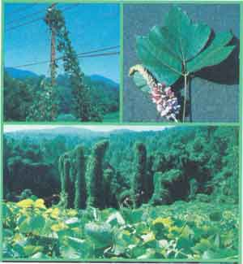
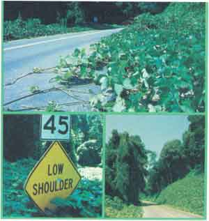

Excerpted from The Book of Kudzu by William Shurtleff and Akiko Aoyagi, copyright © 1977 by the authors and reprinted with the permission of Autumn Press, Inc., publisher. Available in paperback for $4.95 from any good bookstore or for $4.95 plus 95 cents shipping and handling from Mother's Bookshelf, P.O. Box 70, Hendersonville, North Carolina 28739.
Kudzu (pronounced KUD-zoo in the Deep South and KOOD-zoo most everywhere else) is a prolific leguminous vine of the genus Pueraria , native to the Orient . . . the Japanese call it kuzu (KOO-zoo). Introduced to the United States in 1876, kudzu now grows more prolifically throughout the Deep South than in any other part of the world.
Kudzu's devotees point out that the plant combines the virtues of several species: It has long been used for erosion control, for livestock fodder, as a honey source, and as an ornamental vine. Moreover, its leguminous roots host nitrogen-fixing bacteria which enrich the soil by providing a free and continuous supply of natural fertilizer. Originally wild, kudzu is unquestionably a super-plant, for it thrives without fertilizers, pesticides, irrigation, cultivation, replanting, or even care. The key question remains, however: "Is kudzu super-good or super-bad?"
During the warm months, almost anywhere you travel south of the Mason-Dix-on line or east of Texas, you can see great billowing waves of kudzu washing over highway embankments and invading farmlands in a riot of luxuriant foliage. In its relentless search for more room, kudzu has spread like wildfire across the landscape and generally proved itself to be an unstoppable nuisance.
Whereas the Japanese practice a kind of agricultural judo on kudzu, turning its overflowing energy to their advantage, American farmers today usually curse and try to eradicate this hardy perennial. They do not realize that the "green menace" is, in fact, one of Japan's most honored wild plants.
For the family who enjoys foraging for edible wild plants, or the farmsteader who lives off the land from time to time in order to make ends meet, the kudzu vine offers its leaves, shoots, flowers, seeds, and roots for use in a variety of preparations such as tempura, pressed salads, sautéed vegetables, or pickles.
For the doctor, healer, or invalid who wishes to rely on effective traditional remedies, kudzu powder is made into a smooth and soothing thickened broth called Kudzu Cream ( Kudzu-yu ), which helps to develop an alkaline constitution. It also provides quick relief from intestinal and digestive disorders (particularly upset stomach and acid indigestion), hangover, fever, colds, and a variety of more serious ailments.
For the rural farm family, kudzu's leaves and green seeds serve as a plentiful, easily harvested source of nutritious, protein-and chlorophyll-rich livestock fodder, or as an excellent mulch, green manure, or compost base. And for the beekeeper . . . kudzu thickets provide a source of unusually fragrant, flavorful honey.
For the conservationist and aesthete alike, cultivated kudzu vines cover mile after mile of steep embankments along roadways and railway lines the entire length of Japan.
And "kudzu powder" (a literal translation of the Japanese term kuzu-ko ) is a remarkable starchlike extract of the kudzu root. (In natural food stores throughout America, It is sometimes labeled simply "kuzu". The powder comes in crumbly white chunks and has been used in Japan since ancient times as a key ingredient in fine cuisine and as an unusually effective natural medicine.
As versatile as it is delicious, kudzu powder can be used-like arrowroot or cornstarch-as a colloidal thickener in sauces or soups, or as a crispy coating for deep-fried foods . . . like agar or gelatin, it can also serve as a jelling agent, imparting delicate texture and prized flavor to numerous treats and desserts.
Now widely available in the West at reasonable prices, kudzu powder is imported from Japan in large quantities. It will, we hope, soon be produced in America, since kudzu can be cultivated in virtually any climate and kudzu powder can easily be made on a home, community, or commercial scale, using the roots of locally grown plants.
The tempestuous history of kudzu in America is so bizarre that it is sometimes referred to as a "cosmic joke". Kudzu was first brought to the United States from Japan in 1876: It was grown in the Japanese pavilion at the Philadelphia Centennial Exposition.
In the first stage of its history in America, from 1876 until 1910, kudzu was used as an ornamental shade plant. It gained popularity for its decorative dense foliage, which provided welcome shade on sweltering summer days and could be used by gardeners to create a shielding background (to block out the view of neighboring houses) or a lush tropical effect.
The second stage, from 1910 to 1935, saw the development of kudzu's use as livestock pasturage, fodder, and hay. David Fairchild, who served in Japan as a plant explorer for the U.S. Department of Agriculture, had noticed that wild kudzu was used as pasturage, and he started some of the plants in Washington, D.C., partially to test them for this purpose.
Further preparation for this stage began in 1902 when a farmer in the Florida panhandle town of Chipley, Mr. C.E. Pleas, became disappointed with the poor performance of his ornamental kudzu. He yanked it up and replanted it near a garbage pile behind his house. Nothing can match the fury of a spurned kudzu plant, and within two years that pile and much of the area around it were smothered by the luxuriant vine and had never looked so good. However, it was only after Pleas noticed that his chickens, cows, goats, pigs, and horses all liked to eat the leaves that he began to have an inkling of the plant's potential. Believing that he had stumbled on a discovery that would usher in a prosperous new era, Pleas set out with messianic zeal as the first promoter of kudzu cultivation.
As early as 1907, kudzu hay had appeared at an exhibition in Jamestown, Virginia and by 1917 the Alabama Agricultural Experiment Station at Auburn had begun to study kudzu's fodder value. In 1920 John Rigdon, pioneer conservationist from Columbus, Georgia and agricultural agent for the Central of Georgia Railroad, learned of kudzu's remarkable growing speed and excellent nutritional value. He convinced the railroad that the prolific plant, sold as fodder, could provide them with extra freight to haul. And before long, the railroad had initiated a vast program to provide free plants and advice on how to grow kudzu for animal feed.
The third stage of kudzu's history in America, from 1935 to 1955, saw the plant burst into prominence in soil conservation programs throughout the South. By 1935 the South's soil and agrarian economy were suffering from terminal malnutrition . . . the farmers were as poor as their worn-out land, which had been depleted by decades of careless and intensive planting in cotton, tobacco, and corn. Only a miracle, it was believed, could save dear old dying Dixie.
But the growing number of kudzu crusaders felt they had just the answer, and careful experiments reconfirmed their hunch: Not only did kudzu grow on hard, scarred land devoid of topsoll ... it flourished. In fact, it even revitalized the soil by giving back nitrogen-rich nutrients. Moreover, its deep roots let it laugh at drought. The reign of kudzu began in earnest when the various agricultural agencies that sprang up during FDR's New Deal joined forces with the crusaders. In 1933 Congress established the Soil Erosion Service-which in 1935 became the Soil Conservation Service (SCS)-whose main function was to keep the South from washing away. Among the various plants that were tested as potential cover crops, kudzu looked like the one that could do the job. But the response of southern farmers was still cool: They were aware of kudzu's aggressive growth pattern and feared that widespread planting might result in its uncontrollable spread and the loss of entire farms.
Nevertheless, while its initial image was not entirely favorable, additional experimentation and intensive promotion changed kudzu's fortunes. And, by the late 1930's the vine had been introduced into every southern state and was reaching the height of its popularity. In 1939 the first comprehensive (30-page) booklet about the new plant was written by R.Y. "Kudzu" Bailey, the SCS regional agronomist at Spartanburg, South Carolina and one of kudzu's greatest proponents.
The fourth stage in kudzu's tempestuous and comical history began in about 1955, when the very people who had promoted the miracle vine so fervently started to become disenchanted with it. As one southerner wrote: "It was like discovering Ole Blue was a chicken killer." Kudzu now turned on its masters. Once declared the savior of the South, it gradually came to be considered at best a nuisance, at worst a scourge. In 1976, on the 100th anniversary of kudzu in America, newspaper headlines boldly announced: "The South is fighting another war. . . and losing once again."
Why has kudzu spread so rapidly? First, the South's combination of a long growing season, a warm climate, and plentiful rainfall create a uniquely favorable environment for kudzu's growth. Second, in America the plant has almost no natural enemies. (In Japan, by contrast, a less ideal environment plus insect predators and disease keep the vine in check.) And finally, the momentum of Its initial propagation here was hard to slow down.
And why has kudzu declined in favor? Basically because too much was expected of the plant, and its negative aspects-initially glossed over-began to stand out as southern farming moved into the modern era.
The lumber industry and U.S. Forest Service are kudzu's strongest critics today, because it has been playing havoc with timber production in the South . . . especially in recent years, as more southern acreage was turned to forests. Kudzu invades whole forests, climbing saplings and even 100-foot-tall trees, patiently smothering them by cutting off necessary sunlight with its dense foliage.
Telephone companies reportedly have trouble with kudzu pulling down poles, and occasionally they have been forced to run their lines underground. Power companies must spray the plants at least once a year to prevent them from sending tentacles sometimes as much as 80 feet up high voltage towers, where they can short out transmission lines and transformers, causing expensive damage. Highway department crews use her bicides and mowers in their daily skirmishes to try to prevent the plant from covering road signs and guardrails or running out on shoulders and bridges: Its spread keeps the sun off the pavement and holds in moisture, which deteriorates concrete. Railroaders also battle kudzu: They tell of how the vines can grow across the tracks on grades and be churned into a slimy mush under a locomotive's wheels, causing them to slip and the train to stall.
Farmers dislike kudzu most when it sneaks onto their property and damages crops and fruit trees, while providing an unwanted haven for green snakes. It is still widely used as pasturage for grazing livestock, but care must be taken to prevent over-grazing, which can eventually kill the plant.
It was perhaps only natural that as kudzu fell from favor, it became the brunt of an almost endless stream of southern humor. Among southern rural folk, it came to be known as the "mile-a-minute vine" or the "foot-a-night vine". Kudzu and bamboo were said to be the only two things that grow so fast you can measure growth in miles per hour. An Arkansas farmer once quipped, "When you plant kudzu, drop it and run.''
Tifton B. Merritt, a southern journalist, gives the following advice for cultivating kudzu:
Choosing a plot : Although kudzu will grow quite well on cement, you should select an area having at least a little dirt.
When to plant : Kudzu should be planted at night to avoid neighbors seeing you and throwing rocks.
Fertilization : Forty-weight, non-detergent motor oil applied to the underside of tender leaves prevents their scraping when kudzu begins its rapid growth.
Mulching : For best results, as soon as the young shoots begin to appear, mulch heavily with concrete blocks!
In the United States, there are two schools of thought about what should be done with kudzu. The first school, comprising most southerners, advocates eradication. The problem is, nobody has yet found a practical way to stop it. You can poison the vegetable medusa with any of a number of newly developed, highly toxic herbicides, but this method is very expensive and hard on the environment and repeated applications are required over several years. The poisons also kill all nearby plants and make the land unfit for growing other crops for 6 to 12 months . . . exposed to the elements, the large areas of land on which no other crops will grow are subject to severe erosion.
The second school feels that we should start using kudzu creatively instead of complaining about it or trying to kill it. Granted, kudzu now has an image problem and is suffering from a bad press, but that can always be changed.
With the rise of modern chemical agriculture and advanced Western technology, kudzu's key roles have been replaced by more up-to-date and convenient equivalents: chemical fertilizers, soy-and-grain fodders, concrete embankments. Yet Dr. Jake Tinga, a horticulturist with the University of Georgia's Agriculture College Experiment Station, notes: "With the costs of fossil fuel, fertilizer, irrigation systems, and other agribusiness necessities steadily going up and up, farmers may start to reexamine some less sophisticated, less expensive methods of production. "
In the same vein, kudzu is beginning to attract interest among the present generation of Americans interested in living self-sufficiently, closer to the land and in greater harmony with it.
Researchers at Vanderbilt University in Tennessee are investigating the use of the vines and leaves for fuel and the use of the root as a fermentation substrate for the production of both baker's yeast and ethanol fuel. Moreover, they have found that the root seems to provide all the vitamins needed for a very nutritious food and support for yeast fermentation.
Let us hope that the coming years will mark the inception of a fifth phase in kudzu's American odyssey. Already, work is underway in a number of diverse areas to relate to kudzu in new and creative ways:
[1] Kudzu powder is now being used in lieu of lower-quality cooking starches and is featured in some of America's finest natural food restaurants. We may soon even witness the rise of a new southern delicacy, kudzu candy!
[2] Kudzu Root Tea and Kudzu Creams are being used by naturopaths and appearing in their books on healing.
[3] Organic farmers in northern states are experimenting with planting kudzu. (In the colder, drier climate growth can be kept under control.)
[4] Several people have shown interest in starting the first commercial kudzu shops in the West to supply high-quality, natural powder and root at domestic prices.
Before long, the South may come to be viewed as a treasure trove bursting with "white gold" just waiting to be harvested. When this day arrives, kudzu will have found its true home in America . . . this time for real.
The tender young parts of the kudzu plant make a delicious vegetable that may be gathered wild for free. (Avoid gathering the older leaves and shoots, which are generally quite fibrous.) Wash thoroughly before use, then try serving them in your favorite salads, soups, sautéed dishes, and casseroles.
Boil young leaves, wrap in a cotton dishcloth and press with several pounds of weight for 10 minutes. Dice fine and dress with a mixture of 2 tablespoons tahini (or substitute sesame or peanut butter creamed with 1 teaspoon water). 1-1/2 tablespoons vinegar, 1 teaspoon honey, and 1/2 teaspoon salt (or 1-1/2 teaspoons natural soy sauce).
Steamed Roots : Since ancient times, kudzu roots have been used in Japan as, an emergency food in times of famine. Gathered during the fall or winter, when they are rich in starch, they are cut into cubes, steamed or boiled, and served seasoned with natural soy sauce, miso, or salt.
Kudzu powder may be substituted for flour, arrowroot, or cornstarch as a thickening agent in most recipes. Use the following proportions:
1 teaspoon kudzu powder = 3 teaspoons flour
1-1/2 teaspoons kudzu powder = 3 teaspoons arrowroot
4-1/2 teaspoons kudzu powder = 3 teaspoons cornstarch
Acidic liquids such as lemon juice require 10 to 15 percent more kudzu powder for thickening or jelling than water or alkaline liquids such as apple juice.
Dissolving Kudzu Powder: Combine the powder and cold liquid in a small bowl or cup. Stir well, then mash any remaining lumps with fingertips. Pour through a small, fine-mesh strainer into cooking liquid, retrieving all kudzu from bowl with a rubber spatula. Dip strainer in cooking liquid to rinse.
Apple Pie with Kudzu-Apple Juice Glaze: This old-fashioned pie with its opalescent glaze contains no sweetener, yet has its own delicious natural sweetness and delicate texture. The glaze also does nicely atop any of your favorite fruit or vegetable pies (onion, kabocha, or pumpkin are especially good) as well as tortes and cheesecakes.
1/2 cup whole wheat flour
3/4 cup unbleached white flour
1/4 teaspoon salt
3 tablespoons (sesame) oil
1/3 cup water
1/2 egg white (optional)
4 (pippin) apples, thinly sliced
1-1/3 cups apple juice
1/3 cup raisins
1/2 teaspoon cinnamon
1/2 teaspoon lemon juice
2 tablespoons kudzu powder
Preheat oven to 400° F. Combine flours and salt, mixing well. Add oil and rub mixture gently between palms to blend evenly. Gradually add water to form a dough and knead for 2 minutes, or just until smooth. Roll out round on a floured board and use to line a nine-inch pie plate. Flute edges, prick bottom with a fork, and brush, if desired, with egg white. Bake for 30 minutes, or until nicely browned.
While crust is baking, combine apples, 1/3 cup apple juice, and raisins in a saucepan and bring to a boil. Cover and simmer for 15 minutes. Mix in 1/4 teaspoon cinnamon and lemon juice, remove from heat, and allow to cool.
While apples are simmering, combine kudzu powder and the remaining 1 cup apple juice in a small saucepan, stir until dissolved, and bring to a boil. Simmer for about 1 minute, or until transparent and nicely thickened.
Spoon cooked apples into baked crust and smooth surface. Pour kudzu glaze evenly over the top, then allow to cool to room temperature. Cover and refrigerate. Serve chilled, topped with a sprinkling of cinnamon.
|
|
 |
 |